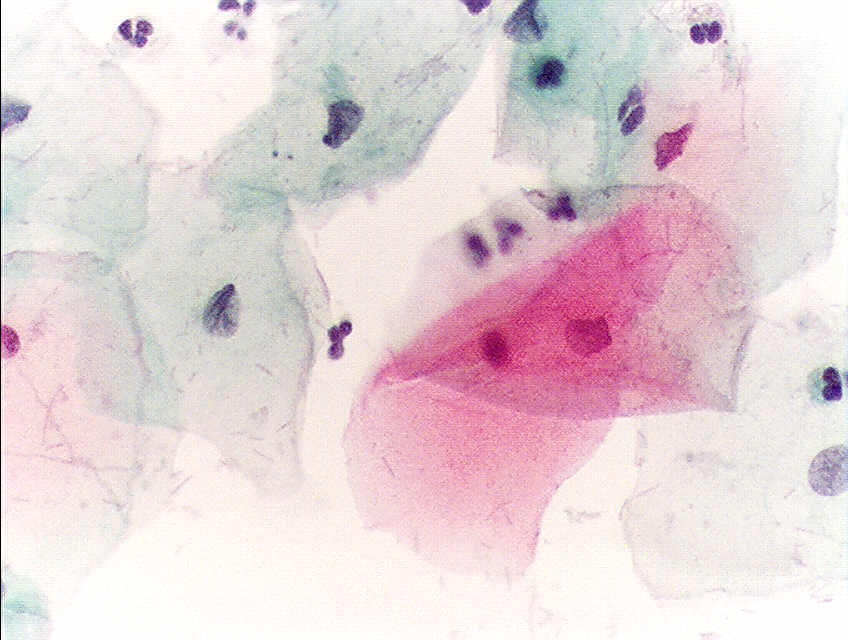
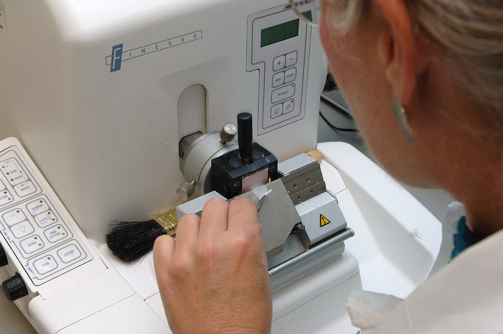
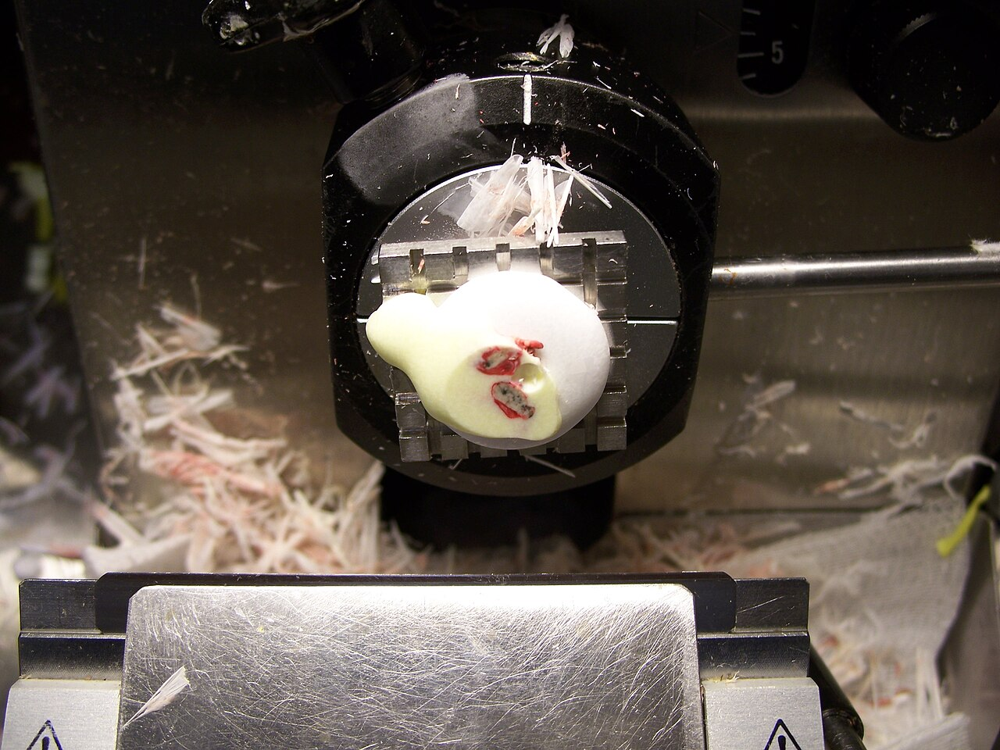
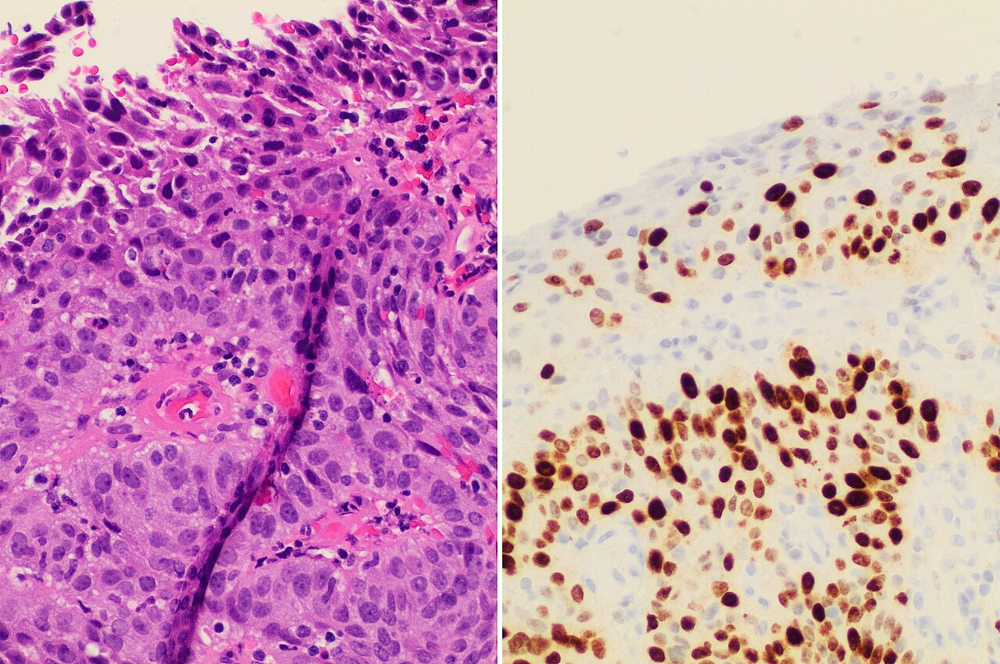
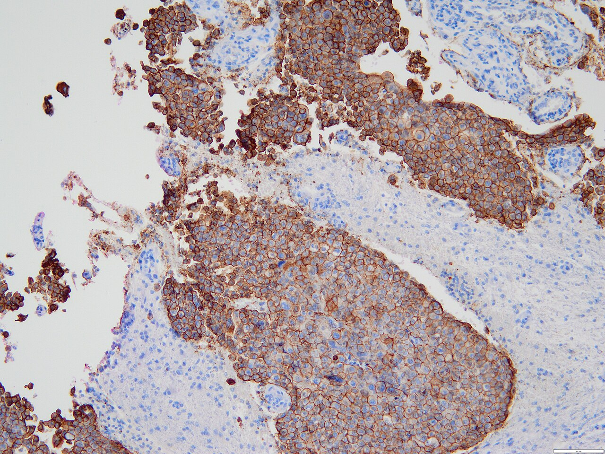

Úvod do patológie a jej metódy
Čo patológia skúma a ako uvažuje o chorobe (etiológia, patogenéza, hranica kompenzácie), z čoho pracuje (biopsia, cytológia, pitva) a ako vzniká diagnóza – od fixácie cez farbenia a imunohistochémiu po molekulovú a digitálnu patológiu.
Predpoklady: —
Odborná kontrola: zatiaľ neprebehla — fakty sú overené len podľa zdrojov uvedených na konci kapitoly · Nahlásiť chybu
0.1Čo patológia skúma
Patológia (gr. pathos = utrpenie, choroba; logos = náuka) je náuka o podstate chorôb: o tom, čo sa pri chorobe zmení v stavbe a funkcii organizmu, prečo sa to zmení a ako z toho vyplývajú príznaky. V našej tradícii sa delí na patologickú anatómiu (čo sa pri chorobe zmení v tvare – od orgánu po molekulu) a patologickú fyziológiu (ako sa zmení funkcia). Tá istá choroba má vždy obe tváre; táto kniha sleduje prvú a pri mechanizmoch si požičiava z druhej.
Orgány sú rôzne, ale repertoár odpovedí tkaniva na poškodenie je malý. Kto pozná vzorce reakcií, rozpozná ich v každom orgáne.
Zmeny sa hľadajú na štyroch úrovniach, a každá potrebuje iný nástroj:
makroskopická (voľné oko, pitva, resekát) → mikroskopická (svetelný mikroskop, rez ≈ 5 µm)
→ submikroskopická (elektrónový mikroskop, organely) → molekulová (antigény – imunohistochémia; gény – FISH, PCR, sekvenovanie)
Zdravie a choroba. WHO chápe zdravie široko: nielen ako stav bez choroby, ale ako úplnú telesnú, duševnú aj sociálnu pohodu. Pre patológa je užitočnejší pohľad cez prispôsobenie – zdravý organizmus nie je nemenný – neustále sa prispôsobuje (adaptuje) meniacim sa podmienkam a drží vnútorné prostredie v úzkom rozpätí (homeostáza, → 1.1 Homeostáza a hranica reverzibility). Choroba začína, keď záťaž presiahne rezervu týchto prispôsobení – odchýlka pretrváva a vlastné regulačné mechanizmy ju už nevrátia do normy.
Z toho vyplýva prvá užitočná myšlienka všeobecnej patológie: orgány sú rôzne, no ich repertoár odpovedí na poškodenie je malý. Tkanivo môže zvýšiť metabolizmus a rásť (progresívne zmeny – hypertrofia, hyperplázia), znížiť ho a chradnúť (regresívne zmeny – dystrofia, atrofia, nekróza, → 1.3 Ako bunka zomiera – dve cesty), alebo spustiť zložitejšie reakcie – poruchu obehu, zápal (→ 3.1 Zápal – definícia, spúšťače a Celsove znaky), poruchu rastu až nádor. Kto tieto vzorce pozná, rozpozná ich v pečeni rovnako ako v obličke. Preto sa patológia učí v troch krokoch: všeobecná (vzorce reakcií), onkologická (nádory) a špeciálna (choroby jednotlivých orgánových systémov).
Zmena, ktorá sa vyskytuje len pri jednej chorobe a sama ju dokazuje, sa volá patognomická (napr. Negriho telieska v neurónoch pri besnote). Väčšina nálezov patognomická nie je – patológ preto skladá diagnózu z viacerých znakov a z klinických údajov.
0.2Etiológia a patogenéza
Etiológia (gr. aitia = príčina) sa pýta, čo chorobu vyvolalo. Choroba však málokedy má jedinú príčinu: vonkajší činiteľ – infekcia (od vírusov a baktérií po huby, prvoky a ďalšie parazity), fyzikálna sila (úraz, popálenie, chlad, žiarenie) alebo chemická látka (žieravina, jed, ťažký kov) – sa stretne s terénom, ktorý si organizmus nesie: génmi (mutácie génov a odchýlky chromozómov sú podkladom vrodených a familiárnych chorôb), vekom, stavom imunity a pridruženými chorobami. Od terénu závisí, či je človek na chorobu náchylný (dispozícia), alebo odolný (rezistencia). Pneumokok preto žije v nosohltane mnohých zdravých ľudí bez príznakov, no starému človeku po chrípke spôsobí zápal pľúc.
Etiológia = čo chorobu vyvolalo (činiteľ × terén). Patogenéza = ako z príčiny vznikne nález. Choroba dekompenzuje, keď kompenzácia sama zvyšuje záťaž.
Patogenéza (pathos + genesis = vznik) sa pýta, ako z príčiny vznikne choroba. Dá sa na ňu pozerať z dvoch strán:
| Kauzálna patogenéza | Formálna patogenéza (morfogenéza) | |
|---|---|---|
| Otázka | Prečo príčina poškodí práve tieto bunky – akým mechanizmom? | Ako sa zmena v tkanive vyvíja – aký je sled nálezov v čase? |
| Príklad – infarkt myokardu | trhlina v aterosklerotickom pláte → trombus uzavrie vencovitú tepnu → ↓ O₂ → ↓ ATP v kardiomyocytoch (→ 1.5.1 Mechanizmus – ako sa bunka rozpadne) | nevratné poškodenie po 20–40 min → koagulačná nekróza viditeľná po 4–12 h → neutrofily v prvých dňoch → makrofágy a granulačné tkanivo → po týždňoch jazva (→ 5.4 Hojenie rany v čase) |
| Čo z toho plynie | kde zasiahnuť liečbou (otvoriť tepnu, zabrániť trombóze) | ako z nálezu na pitve odhadnúť vek infarktu |
Morfologický obraz na konci tejto cesty (napr. jazva v stene komory) je produkt patogenézy – preto patológ z obrazu spätne odhaduje mechanizmus aj čas.
0.2.1Kompenzácia a hranica, za ktorou sa choroba udržiava sama
Organizmus na každé poškodenie odpovie kompenzáciou – mechanizmom, ktorý stratenú funkciu nahradí. Kompenzácia však stojí energiu a často sama záťaž zvyšuje. Kým ju zdroje pokryjú, choroba je kompenzovaná (bez príznakov alebo s miernymi); keď už nie, dekompenzuje a zmeny sa začnú navzájom poháňať. Názorný príklad z obehu – zlyhávajúce srdce:
Každá šípka má činiteľa: nižší prietok obličkou → juxtaglomerulové bunky uvoľnia renín → angiotenzín II zúži arterioly (↑ odpor, proti ktorému srdce pumpuje) a aldosterón zadrží Na⁺ a vodu (↑ objem, ktorý musí srdce prečerpať). Krátkodobo to udrží tlak, dlhodobo to oslabené srdce preťaží ešte viac.
Bod zvratu = okamih, keď dodatočná záťaž z kompenzácie prevýši rezervu myokardu – odtiaľ sa kruh točí sám a bez zásahu sa zhoršuje. Kde prerušiť: na úrovni kompenzácie, nie príčiny – lieky, ktoré tlmia renín–angiotenzínový systém a sympatikus, predlžujú život pri zlyhaní srdca práve preto, že rozpájajú tento kruh. Na bunkovej úrovni platí ten istý princíp – rozdiel medzi reverzibilným poškodením a smrťou bunky opisuje → 1.5.3 Bod nezvratnosti a reperfúzia.
Otázka „kompenzované, alebo už dekompenzované?“ je v klinike všade: kompenzovaná cirhóza (pacient bez príznakov) oproti dekompenzovanej (ascites, krvácanie z varixov, encefalopatia), kompenzovaná acidóza a pod. Patológ ju vidí na tkanive: hypertrofia je stopa kompenzácie, nekróza a fibróza stopa jej zlyhania.
0.3Z čoho patológ pracuje: biopsia, cytológia, pitva
Patológ dnes pracuje prevažne so živými pacientmi – väčšinu jeho práce tvorí vyšetrenie vzoriek odobratých za života, nie pitvy.
Biopsia = tkanivo s architektúrou → vidno inváziu. Cytológia = jednotlivé bunky → šetrná a rýchla, no inváziu neukáže.
- Biopsia (gr. bios = život, opsis = pohľad) = vyšetrenie kúska tkaniva živého pacienta, v ktorom bunky ostali so strómou a cievami v pôvodnom usporiadaní. Podľa spôsobu odberu: kliešťami pri endoskopii (sliznica), hrubou ihlou (core-cut – valček tkaniva z prsníka, obličky, pečene), vyrezaním celého ložiska (excízia) alebo odstránením časti či celého orgánu (resekcia, „-ektómia“).
- Cytológia = vyšetrenie jednotlivých buniek bez architektúry tkaniva. Bunky sa získajú tromi spôsobmi:
- oddelia sa samy – bunky v moči, spúte, vo výpotku v pleure či peritoneu a v mozgovomiechovom moku; tekutina sa zahustí centrifugáciou (exfoliatívna cytológia a cytológia tekutín),
- uvoľní ich lekár z povrchu – ster kefkou (napr. z krčka maternice) alebo odtlačok čerstvej reznej plochy na sklíčko (imprint),
- nasaje ich tenká ihla z ložiska – tenkoihlová aspiračná cytológia (FNA, angl. fine-needle aspiration; štítna žľaza, lymfatická uzlina, prsník).
- Nekropsia (pitva) = vyšetrenie tela po smrti vrátane mikroskopie odobratých vzoriek (→ 0.9 Pitva).
Hruboihlová biopsia a tenkoihlová cytológia sa často dopĺňajú: tenká ihla je šetrnejšia a výsledok je rýchlo k dispozícii, no z pár buniek sa nedá určiť typ nádoru tak spoľahlivo ako z valčeka tkaniva, v ktorom sa dá urobiť aj imunohistochémia a molekulové vyšetrenia.

Rozdiel medzi biopsiou a cytológiou nie je v tom, ktorá je „lepšia“, ale v tom, na akú otázku odpovedajú:
| Biopsia (histológia) | Cytológia | |
|---|---|---|
| Čo sa vyšetruje | tkanivo s architektúrou | jednotlivé bunky alebo ich zhluky |
| Čo vidno | usporiadanie buniek, vzťah k bazálnej membráne a strome, cievy | tvar a veľkosť jadra, pomer jadra k cytoplazme, chromatín |
| Invázia nádoru | dá sa posúdiť – vidno prienik cez bazálnu membránu | nedá sa posúdiť – bunky sú vytrhnuté z kontextu, preto cytológia nerozlíši karcinóm in situ od invazívneho |
| Záťaž pre pacienta | väčšia (rez, ihla so širším priemerom) | malá, opakovateľná, lacná |
| Typické použitie | definitívna diagnóza, typ a stupeň nádoru, okraje resekcie | skríning (krčok maternice), rýchle triedenie ložísk, výpotky |
Pri pleurálnom výpotku sa často robia dve vyšetrenia z jednej punkcie: biochémia rozhodne, či je výpotok zápalový (pomer bielkovín a laktátdehydrogenázy vo výpotku a v sére, → 3.3 Cievna fáza – exsudácia), a cytológia hľadá nádorové bunky v sedimente. Pozitívna cytológia výpotku pri karcinóme znamená rozsev nádoru po pleure – mení štádium aj liečbu.
0.4Cesta vzorky: od odberu po preparát
Tkanivo po odbere žije ešte krátko bez krvi – bunky prechádzajú ischémiou a vlastné enzýmy ich začnú rozkladať rovnako ako po smrti organizmu (autolýza, → 1.10.1 Posmrtné (kadaverózne) zmeny). Celé spracovanie preto začína krokom, ktorý tento rozklad zastaví.
Bez krvi tkanivo autolyzuje → formol zosieťuje bielkoviny a rozklad zastaví → parafín → rez ≈ 5 µm. Čo sa pokazí pred fixáciou, už sa nedá vrátiť.
Štandardom je 10 % neutrálny pufrovaný formol (≈ 4 % formaldehyd). Formaldehyd reaguje s aminoskupinami bielkovín a spojí susedné molekuly metylénovými mostíkmi → bielkoviny vytvoria pevnú sieť (cross-linking) → enzýmy vrátane lyzozómových hydroláz stratia pohyblivosť aj aktivitu → autolýza a hniloba sa zastavia a tkanivo stuhne v tvare, v akom bolo. Pufrovanie na neutrálne pH bráni tomu, aby kyslý formol s hemoglobínom vytvoril hnedý „formolový pigment“ – artefakt, ktorý by sa dal zameniť s chorobným pigmentom.
Fixácia preniká do tkaniva pomaly, preto sa hrubé vzorky pred fixáciou narežú na plátky (bežne ≤ 0,5 cm). To isté sieťovanie, ktoré tkanivo konzervuje, však prekryje časť antigénov a fragmentuje DNA – k tomu sa vrátime pri imunohistochémii (→ 0.7 Imunohistochémia). Do formolu preto nepatrí všetko: natívne (nefixované) tkanivo treba, keď sa plánuje zmrazený rez, kultivácia buniek, izolácia neporušených bielkovín a RNA zo zmrazenej vzorky alebo dôkaz tukov a enzýmov (→ 0.5 Rýchla peroperačná biopsia – zmrazený rez, → 0.6 Farbenia a histochémia) – o spôsobe odoslania sa rozhoduje ešte pred odberom.
Potom nasleduje spracovanie na parafínový bloček – FFPE (angl. formalin-fixed, paraffin-embedded):
označenie vzorky + žiadanka s klinickými údajmi → fixácia vo formole
→ makroskopické vyšetrenie a vyrezanie reprezentatívnych častí (angl. grossing)
→ odvodnenie vzostupným radom alkoholov → xylén → presýtenie roztaveným parafínom → bloček
→ mikrotóm: rezy ≈ 5 µm → odparafínovanie a návrat do vody → farbenie → krycie sklíčko → mikroskop
Každý krok má dôvod v chémii: parafín sa s vodou nemieša, preto sa voda z tkaniva musí najprv vytesniť alkoholom; xylén sa mieša s alkoholom aj s parafínom, a tak slúži ako „most“ medzi nimi. Parafín vyplní bunky zvnútra, bloček sa dá krájať na rezy tenké ≈ 5 µm (1/200 mm), cez ktoré prejde svetlo. Farbivá sú však vodné roztoky – rez sa preto pred farbením musí znova odparafínovať a zavodniť.

Koľko to trvá. Samotné automatizované spracovanie (odvodnenie, projasnenie, zaliatie) trvá pri bežných protokoloch ≈ 18 h – výsledok bežnej biopsie je preto najskôr na druhý deň po prijatí, pri pitve a zložitých prípadoch 2–5 dní; imunohistochémia a molekulové metódy pridávajú ďalšie dni.
0.4.1Hranica kvality: čas bez fixácie
Doba, počas ktorej tkanivo leží bez krvi a bez fixatívu (studená ischémia), je hranicou, za ktorou sa kvalita vzorky už nedá vrátiť: autolýza rozruší jadrá a bielkoviny, niektoré antigény sa rozložia skôr než iné a RNA sa začne rozkladať najrýchlejšie. Pre vzorky karcinómu prsníka určujúce liečbu preto odporúčania ASCO/CAP požadujú vložiť tkanivo do formolu do 1 h od odberu a fixovať 6–72 h (Wolff a spol., 2023). Príliš krátka fixácia nechá stred vzorky nefixovaný (v alkohole sa bielkoviny vyzrážajú inak), príliš dlhá prehĺbi prekrytie antigénov – oboje vedie k falošne negatívnej imunohistochémii (Magaki a spol., 2019).
Najčastejšia chyba nevzniká v laboratóriu, ale pri odbere: vzorka zabudnutá na stole cez víkend, bez formolu, zle označená alebo bez klinických údajov. Patológ, ktorý nevie, že pacient dostal chemoterapiu alebo že ide o recidívu, môže správne opísať nález a napriek tomu dôjsť k zlému záveru. Žiadanka je súčasť vzorky.
0.5Rýchla peroperačná biopsia – zmrazený rez
Niekedy chirurg potrebuje odpoveď počas operácie: je ložisko zhubné? Sú okraje resekcie čisté? Je vo vzorke vôbec diagnostické tkanivo? Na to slúži zmrazený rez. Natívne (nefixované) tkanivo sa zaleje do média, zmrazí v kryostate pri −20 až −30 °C, nakrája na rezy 5–10 µm a rýchlo zafarbí hematoxylínom-eozínom. Voda zamrznutá v tkanive tu hrá rolu parafínu – spevní ho na krájanie.
Zmrazený rez: odpoveď do ≈ 20 min, kým je pacient na stole – len keď zmení postup operácie. Rýchly, no menej presný; parafínový rez nenahrádza.
Indikácie vyplývajú z toho, čo chirurg s odpoveďou urobí hneď, kým je pacient na stole:
- Má vzorka vôbec výpovednú hodnotu? Pri biopsii z ťažko dostupného miesta (napr. mozog) patológ overí, že ihla zachytila chorobné tkanivo, a nie len okolie či nekrózu – inak sa odoberie ďalšia vzorka, kým je lebka otvorená.
- Ako rozsiahly má byť výkon? Zhubný uzol v pľúcach vedie k lobektómii s odstránením uzlín, nezhubný k menšej resekcii.
- Rozšíril sa nádor do uzlín? Vyšetrí sa sentinelová (strážna) uzlina – prvá na lymfatickej ceste z nádoru; bez metastázy v nej sa ďalšie uzliny nemusia odstraňovať.
- Je nádor odstránený celý? Ak sú nádorové bunky v okraji resekátu, chirurg hneď doreseká namiesto druhej operácie o týždeň.
Naopak, ak by výsledok nezmenil postup operácie, zmrazený rez sa nerobí – vzorka sa radšej celá spracuje parafínovou cestou, ktorá dá kvalitnejší obraz a neminie tkanivo na artefakty.

Príprava rezu trvá 5–10 min, výsledok býva u chirurga do ≈ 20 min od doručenia. Presnosť voči definitívnej parafínovej histológii je vo veľkých súboroch 92–98 % (Jaafar, 2006).
Zmrazený rez odpovedá rýchlo, ale menej presne – bežnú histológiu nenahrádza. Ľadové kryštály roztrhajú bunky (artefakt), tuk nezmrzne dosť tvrdo na krájanie a kosť a kalcifikáty sa krájať nedajú vôbec. Horšie výsledky dáva tam, kde diagnóza stojí na celom puzdre alebo na jemných detailoch jadra – napr. pri folikulových nádoroch štítnej žľazy (invázia puzdra sa v jednom reze nemusí zachytiť) a melanocytových léziách. Každý zmrazený rez sa preto dodatočne spracuje aj parafínovou cestou.
0.6Farbenia a histochémia
Nezafarbený rez je takmer priehľadný. Farbivá ho „zviditeľnia“ tak, že sa viažu na chemicky odlišné zložky bunky – a práve preto sa z farby dá usudzovať na zloženie.
Farbivo sa viaže podľa chémie tkaniva → z farby sa číta zloženie. HE: nukleové kyseliny modré, bielkoviny ružové; čo je v HE rovnako ružové, rozlíšia špeciálne farbenia.
Hematoxylín sa oxidáciou mení na hemateín, ktorý s hlinitými iónmi vytvorí kladne nabitý komplex → ten sa viaže na záporne nabité fosfátové skupiny nukleových kyselín → jadrá (DNA) a ribozómy (RNA) sú modrofialové = bazofilné. Eozín je kyslé, záporne nabité farbivo → viaže sa na kladne nabité aminoskupiny bielkovín → cytoplazma, kolagén, erytrocyty, fibrín sú ružové = eozinofilné.
Z toho sa dá vyčítať biológia bunky. Bunka, ktorá tvorí veľa bielkovín na export (plazmocyt), má cytoplazmu plnú ribozómov (RNA) → modrastú. Odumretá bunka stratí RNA a jej bielkoviny denaturujú → cytoplazma zčervenie a jadro zmizne (→ 1.5.2 Histologické znaky nekrotickej bunky). Viaceré rôzne látky (hyalín, amyloid, fibrinoid, fibrín) sú však v HE rovnako ružové – na ich odlíšenie treba farbenia, ktoré využívajú inú chémiu.
| Farbenie | Čo dokáže | Prečo to funguje | Kde v knihe |
|---|---|---|---|
| PAS (kyselina jodistá–Schiff) | glykogén, neutrálne mucíny, bazálne membrány, steny plesní – purpurovo | kyselina jodistá oxiduje susedné OH skupiny cukrov na aldehydy, tie zafarbí Schiffovo činidlo | |
| PAS po diastáze | odlíši glykogén od iných PAS-pozitívnych látok | diastáza (amyláza) glykogén rozloží → ak farba zmizne, bol to glykogén | → 2.5.1 Glykogénové dystrofie |
| Alciánová modrá | kyslé mucíny – modro | kladne nabité farbivo viaže záporne nabité sulfátové a karboxylové skupiny | → 2.4.3 Hlienové dystrofie |
| Konžská červeň | amyloid – červeno, v polarizovanom svetle jablkovo-zelený dvojlom | molekuly farbiva sa uložia pravidelne pozdĺž fibríl s β-skladaným listom a svetlo lámu usmernene | → 2.4.5 Amyloidóza |
| Sudan, olejová červeň | neutrálne tuky – červeno | farbivo sa rozpúšťa v tuku lepšie než vo svojom rozpúšťadle; len zo zmrazeného rezu, lebo alkohol a xylén tuk pri parafínovom spracovaní vylúhujú | → 2.3.1 Steatóza |
| Van Gieson | kolagén červeno, sval a fibrinoid žlto | malá molekula kyseliny pikrovej zafarbí všetko, väčší kyslý fuchsín ju vytlačí len z pórovitého kolagénu | → 2.4.4 Fibrinoidná dystrofia |
| Perlsova (berlínska modrá) | železo v hemosideríne – modro | Fe³⁺ + ferokyanid → nerozpustný modrý pigment | |
| von Kossa | vápenaté soli – čierno | striebro nahradí vápnik vo fosfátoch a na svetle sa redukuje na čierne kovové striebro | → 1.7.2 Čo sa deje s nekrotickým tkanivom ďalej |
| Ziehl–Neelsen | acidorezistentné tyčinky (mykobaktérie) – červeno | stena bohatá na mykolové kyseliny udrží karbolfuchsín aj po odfarbení kyslým alkoholom | → 1.6.3 Kaseifikačná (kazeózna) nekróza |
| Gram, Grocott | baktérie (Gram), plesne (Grocott – striebro na čierno) | rozdiel v stavbe steny mikroorganizmu |
Mikroskopy. Bežný svetelný mikroskop zväčšuje objektívom 4×–40× a okulárom 10×, teda do ≈ 400×. Polarizačný mikroskop odhalí látky s pravidelne usporiadanými molekulami (dvojlom – amyloid v Konžskej červeni, kryštály oxidu kremičitého). Elektrónový mikroskop ukáže to, čo je pod hranicou rozlíšenia svetla: depozity imunokomplexov v glomerulovej bazálnej membráne, stavbu mitochondrií pri chorobách svalov. Elektróny cez hrubý rez neprejdú, preto sa krája na ultratenké rezy (≈ 60–80 nm) z drobných kúskov tkaniva; membrány a lipidy musí zachovať iná fixácia než formol (glutaraldehyd, oxid osmičelý). Pri väčšine nádorov ho dnes nahradila imunohistochémia.
Elektrónová mikroskopia sa takmer nikdy nerobí z pitevného materiálu: organely sa po smrti rozkladajú v priebehu minút až hodín a pitva sa smie začať najskôr 2 h po zistení smrti. Posmrtná autolýza by sa javila ako chorobný nález.
0.7Imunohistochémia
HE ukáže, ako bunka vyzerá, ale nie vždy, čím je. Nediferencovaný nádor z malých okrúhlych buniek môže byť karcinóm, lymfóm, melanóm aj sarkóm – každý sa lieči inak. Imunohistochémia (IHC) odpovedá na túto otázku tak, že na reze nájde konkrétnu bielkovinu.
Imunohistochémia = protilátka nájde bielkovinu priamo na reze. Povie, čím bunka je (diagnóza), ako rýchlo rastie (prognóza) a či zaberie liek (predikcia). Platí len s kontrolou.
Protilátka proti hľadanej bielkovine (antigénu) sa naviaže na rez → na ňu sa naviaže sekundárna protilátka nesúca enzým (peroxidázu) → enzým premení bezfarebný substrát DAB (diaminobenzidín) na hnedú nerozpustnú zrazeninu presne na mieste antigénu → jadrá sa dofarbia hematoxylínom na modro, aby bolo vidno, kde bunky sú. Keďže formol časť antigénov prekryl sieťovaním, rez sa pred farbením zahreje v pufri (tepelné demaskovanie epitopov), čím sa mostíky čiastočne rozpoja.
Farba v reze sama nedokazuje, že tam antigén je, a jej chýbanie nedokazuje opak: protilátka sa môže naviazať na podobnú bielkovinu, alebo formol práve jej cieľové miesto na molekule (epitop) zničil. Preto sa hodnotí len farbenie so zabudovanou kontrolou. Najspoľahlivejšia je vnútorná: normálne bunky v tom istom reze, ktoré antigén mať majú (napr. hladký sval v stene cievy pri farbení na svalové bielkoviny) – keď sa zafarbia, reakcia fungovala. K tomu sa pridáva kúsok tkaniva so známym výsledkom a rez bez primárnej protilátky, ktorý ukáže nešpecifické zafarbenie.

Hnedá farba musí sedieť tam, kde bielkovina v bunke pracuje: transkripčný faktor alebo receptor pre hormón v jadre, receptor pre rastový faktor na membráne, bielkovina cytoskeletu v cytoplazme. Farba na inom mieste je skôr artefakt. Pri liekových cieľoch sa navyše udáva podiel pozitívnych buniek v percentách a sila farbenia v stupňoch (→ 0.8 Molekulová patológia a nové metódy). Informáciu nesie aj strata farbenia: ak nádorové bunky neobsahujú bielkovinu, ktorú susedné normálne bunky majú, gén pre ňu je v nádore vyradený – takto sa napr. hľadajú nádory s poruchou opravy chýb DNA (mikrosatelitová instabilita).
Neznámy nádor sa určuje ako pri kľúči na určovanie rastlín – každá odpoveď zúži ďalšiu otázku. Najprv sa zisťuje, z akého tkaniva nádor pochádza, lebo každé tkanivo má vlastnú kostru a povrchové znaky: epitel obsahuje cytokeratíny (karcinóm), krvotvorné bunky spoločný leukocytový antigén CD45 (lymfóm), bunky neurálnej lišty S100 a SOX10 (melanóm), svalové bunky desmín. Až pri karcinóme má zmysel pýtať sa, z ktorého orgánu: pomôžu transkripčné faktory, ktoré si bunka ponesie aj do metastázy – TTF-1 (pľúca, štítna žľaza), CDX2 (črevo), GATA3 (prsník, močový mechúr), PAX8 (oblička, vaječník, štítna žľaza).
IHC má dnes tri úlohy: diagnostickú (čo je to za nádor), prognostickú (Ki-67 – ako rýchlo rastie) a prediktívnu – či bude fungovať konkrétny liek. Pri karcinóme prsníka rozhodujú estrogénový a progesterónový receptor o hormonálnej liečbe a HER2 o liečbe protilátkami proti HER2. Pacientka s negatívnym receptorom by hormonálnu liečbu dostávala zbytočne.

0.8Molekulová patológia a nové metódy
Keď nestačí vedieť, či bielkovina v bunke je, a treba vedieť, čo sa stalo s génom, nastupujú molekulové metódy. Delia sa podľa materiálu: jedny pracujú priamo na reze (in situ), iné s nukleovou kyselinou izolovanou z tkaniva alebo z krvi.
Molekulové metódy zisťujú, čo sa stalo s génom (amplifikácia, translokácia, mutácia). Prognostický faktor = priebeh choroby, prediktívny = odpoveď na liek.
- FISH (fluorescenčná in situ hybridizácia) – fluorescenčne značený úsek DNA (sonda) sa na reze naviaže na komplementárnu sekvenciu v jadre. Počet svetelných bodov = počet kópií génu (amplifikácia), rozdelené farebné body = zlom génu (translokácia). Pri HER2 je gén amplifikovaný, ak je pomer signálov HER2 ku kontrolnej sonde chromozómu 17 aspoň 2,0 a zároveň ≥ 4 kópie na bunku (Wolff a spol., 2023).
- Imunoonkológia – na nádorových bunkách sa hodnotí napr. PD-L1: podiel živých nádorových buniek s membránovou pozitivitou (TPS) predpovedá odpoveď na lieky, ktoré uvoľňujú brzdu T lymfocytov (inhibítory kontrolných bodov PD-1/PD-L1).
- Digitálna patológia – skener nasníma celé sklíčko po tisíckach políčok a zloží ich do jedného obrazu (angl. whole slide imaging), na ktorý sa dá pozerať na diaľku a ktorý môžu analyzovať algoritmy umelej inteligencie (počítanie mitóz, kvantifikácia biomarkerov, vyhľadávanie ložísk karcinómu). K 8/2025 mali v USA regulačné schválenie len tri takéto nástroje; hlavnou prekážkou je, že model naučený na preparátoch jedného laboratória často zlyhá pri inom farbení a skeneri (Makhlouf a spol., 2025).
- Výhľad – predmetom výskumu je aj vzťah medzi zložením črevného mikrobiómu a zápalovými, prípadne ďalšími chorobami; do bežnej diagnostiky zatiaľ nepatrí.
- PCR a sekvenovanie – z bločku sa izoluje DNA/RNA a konkrétny úsek sa namnoží (PCR) alebo sa naraz prečíta desiatky až stovky génov (NGS, sekvenovanie novej generácie). Formol DNA fragmentuje, preto sa z FFPE číta len v krátkych úsekoch.
- Tekutá biopsia – odber krvi namiesto tkaniva. Nádorové bunky, ktoré hynú apoptózou alebo nekrózou (→ 1.4 Apoptóza), uvoľnia do plazmy úlomky svojej DNA (ctDNA, cirkulujúca nádorová DNA, dlhé ≈ 160–200 bp); ich polčas je ≈ 15 min až 2,5 h, takže odráža aktuálny stav nádoru. Tvoria však často len ≈ 1 % všetkej voľnej DNA alebo menej – negatívny výsledok nádor nevylučuje a tekutá biopsia tkanivovú zatiaľ nenahrádza (Li a spol., 2023).
| Prognostický faktor | Prediktívny faktor | |
|---|---|---|
| Otázka | Aký bude priebeh choroby bez ohľadu na liečbu? | Zaberie konkrétny liek? |
| Príklad | Ki-67, stupeň diferenciácie (grading), štádium | estrogénový receptor → hormonálna liečba; HER2 → anti-HER2 liečba; mutácia EGFR → inhibítory EGFR |
| Čo z neho plynie | intenzita liečby, sledovanie | výber lieku |
Klasicky sa HER2 hodnotil dvojhodnotovo: 3+ (alebo amplifikácia vo FISH) = liečba proti HER2, všetko ostatné = nie. S novou skupinou liekov (konjugáty protilátky s cytostatikom) sa ukázalo, že účinkujú aj pri nízkej expresii HER2 (IHC 1+ alebo 2+ bez amplifikácie). Odporúčania ASCO/CAP 2023 preto nemenia hranice pozitivity, ale výslovne žiadajú rozlišovať IHC 0 od 1+, lebo tento rozdiel dnes rozhoduje o liečbe (Wolff a spol., 2023).
0.9Pitva
Pitva (nekropsia, obdukcia) je vyšetrenie tela zomrelého: zovňajšia prehliadka, otvorenie telesných dutín, vybratie a prepitvanie orgánov a odber vzoriek na histológiu, prípadne mikrobiológiu a toxikológiu. Rozlišujú sa:
- anatomická pitva (prosekcia) – výučba normálnej anatómie; takou bola aj verejná pitva, ktorú v júni 1600 predviedol v Prahe Ján Jessenius,
- patologicko-anatomická pitva – zisťuje chorobu, jej komplikácie a príčinu smrti u zomrelých v zdravotníckom zariadení a overuje správnosť klinickej diagnózy a liečby,
- súdnolekárska pitva – pri násilnej smrti, podozrení z trestného činu, samovražde, otrave; vykonáva ju súdny lekár, nie patológ.
Pitva overuje diagnózu a liečbu. Záver sa píše v poradí: základné ochorenie → komplikácie → príčina smrti. Posmrtné zmeny od zmien za života odlíši vitálna reakcia.
Na Slovensku pitvy nariaďuje a vykonáva Úrad pre dohľad nad zdravotnou starostlivosťou na svojich patologicko-anatomických a súdnolekárskych pracoviskách (§ 48 zákona č. 581/2004 Z. z.) – napr. pri smrti v zdravotníckom zariadení na overenie choroby alebo liečby, pri podozrení na poškodenie liečbou, pri náhlej neočakávanej smrti, otrave, úraze a násilnej smrti. Pitvu nesmie vykonať lekár, ktorý zomrelého liečil.
Závery pitvy sa zapisujú v pevnom poradí, ktoré zachytáva patogenézu smrti:
- I. Základné ochorenie – choroba, ktorá reťazou komplikácií viedla k smrti (napr. dlhoročné fajčenie → karcinóm pľúc),
- II. Komplikácie – čo z nej vzniklo (metastázy, kachexia, bronchopneumónia),
- III. Bezprostredná príčina smrti (napr. bronchopneumónia),
- IV. Vedľajšie nálezy – choroby, ktoré so smrťou nesúviseli (napr. jazva po starom infarkte, žlčové kamene).
Záver dopĺňa klinicko-patologická epikríza, ktorá porovná pitevný nález s klinickou diagnózou.
Počet nemocničných pitiev v západných krajinách klesol z ≈ 50 % zomrelých v 50. rokoch 20. storočia na 5–10 % v 90. rokoch a dnes často pod 5 %. Pritom v novších súboroch sa pitevná diagnóza v podstatnej veci líši od klinickej približne v každom štvrtom prípade – v nemeckom súbore 1 112 pitiev v 26,1 % prípadov, najčastejšie pri chorobách srdca a ciev (Kurz a spol., 2021).
Heslo „mortui vivos docent“ („mŕtvi učia živých“) je dôvod, prečo má pitva význam aj v ére CT: odhalí prehliadnutú pľúcnu embóliu, infarkt, infekciu alebo komplikáciu liečby, a tým spätne zlepší starostlivosť o ďalších pacientov. Pri nových chorobách (napr. COVID-19) práve pitvy ukázali, že vírus poškodzuje aj endotel a vyvoláva trombózy v malých cievach pľúc. Náhrady pitvy – ihlová pitva, posmrtné CT alebo MRI (virtopsia) – zachytia zlomeniny, krvácania a cudzie telesá, no nie mikroskopické zmeny; platí, že neúplná pitva = neúplná informácia.
Na tele zomrelého sa po smrti vyvíjajú posmrtné zmeny – autolýza, posmrtné zrazeniny, livory (→ 1.10 Smrť organizmu a posmrtné zmeny). Patológ ich musí odlíšiť od zmien vzniknutých za života; kľúčom je vitálna reakcia – zápal, ktorý vie vyvolať len živé tkanivo (→ 1.5 Nekróza – základné pojmy a priebeh).
Pitva nesie aj riziko pre toho, kto ju robí: poranenie nástrojmi a úlomkami kostí, alergie (formaldehyd, latex) a najmä infekcie – tuberkulóza, vírusové hepatitídy, HIV, prióny. Dnešné pitevne sa proti nim bránia vzduchotechnikou, dezinfekciou a ochrannými pomôckami.
0.10Súhrn a rýchle rozlíšenie
| Metóda | Na akú otázku odpovedá | Princíp | Kedy výsledok | Obmedzenie |
|---|---|---|---|---|
| Makroskopia | kde, aké veľké, aký vzťah k okoliu | voľné oko, meranie, vyrezanie | hneď | nerozlíši typ buniek |
| Histológia (HE) | čo je to za proces/nádor | fixácia, parafín, rez ≈ 5 µm, farbenie podľa náboja | ≥ 1 deň | mnohé látky sú rovnako ružové |
| Zmrazený rez | zhubné? okraje čisté? | zmrazenie natívneho tkaniva | ≈ 20 min | artefakty, tuk, kosť; len orientačne |
| Cytológia | sú tam atypické/nádorové bunky? | jednotlivé bunky z povrchu, ihly, tekutiny | hodiny–dni | nevidí architektúru ani inváziu |
| Histochémia | z čoho je depozit/pigment/mikrób | chemická reakcia so zložkou tkaniva | dni | pri niektorých farbeniach treba zmrazený rez |
| Imunohistochémia | akej línie a pôvodu je bunka; predikcia liečby | protilátka + enzým + DAB | dni | fixácia, kontroly, interpretácia |
| Molekulová patológia | čo sa stalo s génom | FISH, PCR, NGS, tekutá biopsia | dni–týždne | fragmentovaná DNA z FFPE, malý podiel ctDNA |
| Pitva | prečo pacient zomrel, sedela diagnóza? | prehliadka a pitva tela + histológia | dni | posmrtné zmeny |
Ako uvažovať o každej ďalšej kapitole: príčina (etiológia) → mechanizmus (patogenéza) → čo z toho uvidíš na reze (morfológia) → čím to potvrdíš (metóda z tejto kapitoly) → čo z toho má pacient (klinika). Každá metóda odpovedá len na svoju otázku – dobrá diagnóza vzniká ich kombináciou s klinickými údajmi.
0.11Otázky na zopakovanie
Prečo sa tkanivo po odbere musí čo najskôr vložiť do formolu a čo sa stane, ak leží cez víkend na stole?
Bez krvi bunky podliehajú autolýze – vlastné lyzozómové enzýmy ich rozkladajú. Formaldehyd pospája bielkoviny metylénovými mostíkmi a enzýmy tým zastaví. Neskorá fixácia znamená rozrušené jadrá, stratené antigény a degradovanú RNA – a to sa už nedá vrátiť. → 0.4 Cesta vzorky: od odberu po preparátPrečo sa tuk v bežnom parafínovom reze nedá zafarbiť Sudanom a ako sa to rieši?
Alkohol a xylén pri parafínovom spracovaní tuk z buniek vylúhujú – v reze ostanú len prázdne vakuoly. Tuk sa dokazuje na zmrazenom reze, ktorý alkoholom a xylénom neprechádza. → 0.6 Farbenia a histochémiaPrečo sú jadrá v HE modré a cytoplazma ružová?
Hematoxylín s hlinitými iónmi tvorí kladne nabitý komplex, ktorý viaže záporne nabité fosfáty nukleových kyselín (bazofília). Eozín je záporne nabitý a viaže kladne nabité aminoskupiny bielkovín (eozinofília). → 0.6 Farbenia a histochémiaPrečo cytológia nevie rozlíšiť karcinóm in situ od invazívneho karcinómu, kým biopsia áno?
Invázia je vzťah buniek k bazálnej membráne a strome – vidno ju len v tkanive so zachovanou architektúrou. Cytológia hodnotí jednotlivé bunky vytrhnuté z kontextu. → 0.3 Z čoho patológ pracuje: biopsia, cytológia, pitvaImunohistochémia na hormonálny receptor vyšla negatívna aj vo vzorke, kde by pozitívna mala byť. Čo mohlo byť príčinou?
Chyba preanalytiky: dlhá studená ischémia alebo príliš krátka či príliš dlhá fixácia (prekrytie a rozklad epitopov). Odhalí to vnútorná pozitívna kontrola – normálne bunky v tom istom reze, ktoré sa farbiť majú a nefarbia sa. → 0.4.1 Hranica kvality: čas bez fixácieAký je rozdiel medzi prognostickým a prediktívnym faktorom? Uveď príklad z karcinómu prsníka.
Prognostický predpovedá priebeh choroby (Ki-67, grading, štádium), prediktívny odpoveď na konkrétny liek (estrogénový receptor → hormonálna liečba, HER2 → anti-HER2 liečba). → 0.8 Molekulová patológia a nové metódyPrečo negatívna tekutá biopsia nevylučuje mutáciu v nádore?
ctDNA tvorí často len okolo 1 % voľnej DNA v plazme alebo menej a jej množstvo závisí od veľkosti a prekrvenia nádoru; citlivosť metód je obmedzená. Pri negatívnom výsledku treba vyšetriť tkanivo. → 0.8 Molekulová patológia a nové metódyPrečo sa kompenzácia pri zlyhávaní srdca môže zmeniť na circulus vitiosus a kde je bod zvratu?
Renín–angiotenzín–aldosterón a sympatikus udržia tlak vazokonstrikciou a zadržaním Na⁺ a vody, no tým zvýšia odpor aj objem, ktoré musí oslabené srdce prečerpať. Bod zvratu je chvíľa, keď záťaž z kompenzácie prevýši rezervu myokardu; kruh sa prerušuje tlmením kompenzačných systémov. → 0.2.1 Kompenzácia a hranica, za ktorou sa choroba udržiava samaPrečo má pitva význam aj v dobe CT a čo z nej patológ zapisuje ako prvé?
Približne v každom štvrtom prípade sa pitevná diagnóza podstatne líši od klinickej; pitva odhalí prehliadnuté príčiny smrti a komplikácie liečby. Pitevná diagnóza začína základným ochorením, nasledujú komplikácie, bezprostredná príčina smrti a vedľajšie nálezy. → 0.9 Pitva
0.12Zdroje
- Zámečník J. a kol.: Patologie, 2. vyd., Praha: LD Prager Publishing, 2024 (kap. 48–53: metodika, pitva). ISBN 978-80-11-04919-5.
- Národná banka Slovenska: Ján Jessenius – 450. výročie narodenia, sprievodný list k zberateľskej minci, 2016 – verejná pitva v Prahe v júni 1600.
- World Health Organization: Constitution of the World Health Organization (prijatá 1946, platná od 1948) – definícia zdravia.
- Wolff A. C., Somerfield M. R., Dowsett M. et al.: Human Epidermal Growth Factor Receptor 2 Testing in Breast Cancer: ASCO–College of American Pathologists Guideline Update. J Clin Oncol 2023;41(22):3867–3872. doi:10.1200/JCO.22.02864
- Magaki S., Hojat S. A., Wei B., So A., Yong W. H.: An Introduction to the Performance of Immunohistochemistry. Methods Mol Biol 2019;1897:289–298. doi:10.1007/978-1-4939-8935-5_25
- Jaafar H.: Intra-Operative Frozen Section Consultation: Concepts, Applications and Limitations. Malays J Med Sci 2006;13(1):4–12. PMC3347896
- Li Y. Z., Kong S. N., Liu Y. P. et al.: Can Liquid Biopsy Based on ctDNA/cfDNA Replace Tissue Biopsy for the Precision Treatment of EGFR-Mutated NSCLC? J Clin Med 2023;12(4):1438. doi:10.3390/jcm12041438
- Makhlouf H. R. et al.: Digital pathology imaging artificial intelligence in cancer research and clinical trials: An NCI workshop report. J Pathol Inform 2025;20:100531. doi:10.1016/j.jpi.2025.100531
- Kurz S. D., Sido V., Herbst H. et al.: Discrepancies between clinical diagnosis and hospital autopsy: A comparative retrospective analysis of 1,112 cases. PLoS One 2021;16(8):e0255490. doi:10.1371/journal.pone.0255490
- Úrad pre dohľad nad zdravotnou starostlivosťou: Vykonávanie pitvy (zákon č. 581/2004 Z. z., § 48).
Autor, licencia a odkaz na zdroj sú pri každom obrázku; súhrn je v registri ZDROJE-OBRAZKOV.md.
Pokračuje v: → 1 Atrofia, nekróza, apoptóza